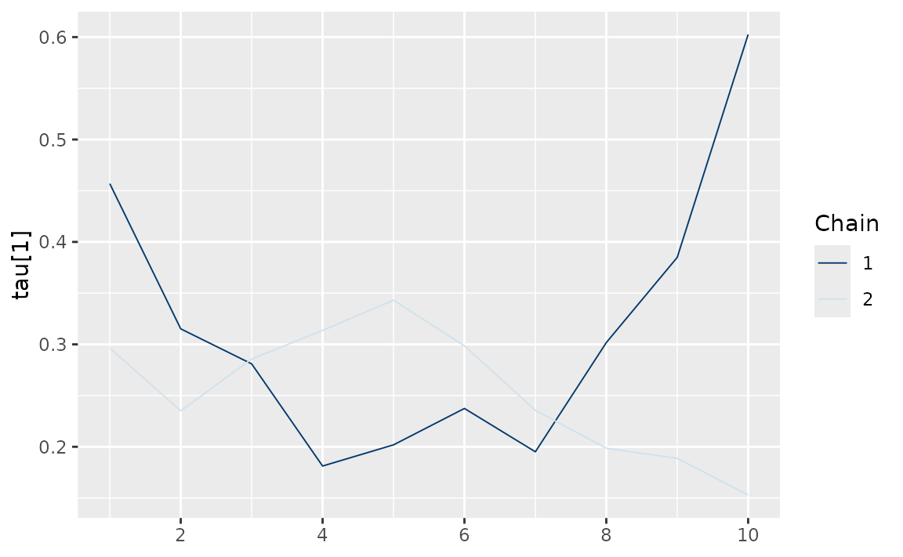

etf <- etf_vix[1:55, 1:3]
# Split-------------------------------
h <- 5
etf_eval <- divide_ts(etf, h)
etf_train <- etf_eval$train
etf_test <- etf_eval$testBayesian VAR and VHAR
var_bayes() and vhar_bayes() fit BVAR and
BVHAR each with various priors.
-
y: Multivariate time series data. It should be data frame or matrix, which means that every column is numeric. Each column indicates variable, i.e. it sould be wide format. -
porhar: VAR lag, or order of VHAR -
num_chains: Number of chains- If OpenMP is enabled, parallel loop will be run.
-
num_iter: Total number of iterations -
num_burn: Number of burn-in -
thinning: Thinning -
coef_spec: Coefficient prior specification.- Minneosta prior
- BVAR:
set_bvar() - BVHAR:
set_bvhar()andset_weight_bvhar() - Can induce prior on
using
lambda = set_lambda()
- BVAR:
- SSVS prior:
set_ssvs() - Horseshoe prior:
set_horseshoe() - NG prior:
set_ng() - DL prior:
set_dl()
- Minneosta prior
-
contem_spec: Contemporaneous prior specification. -
cov_spec: Covariance prior specification. Useset_ldlt()for homoskedastic model. -
include_mean = TRUE: By default, you include the constant term in the model. -
minnesota = c("no", "short", "longrun"): Minnesota-type shrinkage. -
verbose = FALSE: Progress bar -
num_thread: Number of thread for OpenMP- Used in parallel multi-chain loop
- This option is valid only when OpenMP in user’s machine.
Stochastic Search Variable Selection (SSVS) Prior
(fit_ssvs <- vhar_bayes(etf_train, num_chains = 1, num_iter = 20, coef_spec = set_ssvs(), contem_spec = set_ssvs(), cov_spec = set_ldlt(), include_mean = FALSE, minnesota = "longrun"))
#> Call:
#> vhar_bayes(y = etf_train, num_chains = 1, num_iter = 20, coef_spec = set_ssvs(),
#> contem_spec = set_ssvs(), cov_spec = set_ldlt(), include_mean = FALSE,
#> minnesota = "longrun")
#>
#> BVHAR with SSVS prior + SSVS prior
#> Fitted by Gibbs sampling
#> Total number of iteration: 20
#> Number of burn-in: 10
#> ====================================================
#>
#> Parameter Record:
#> # A draws_df: 10 iterations, 1 chains, and 90 variables
#> phi[1] phi[2] phi[3] phi[4] phi[5] phi[6] phi[7] phi[8]
#> 1 -0.0876 -0.0175 -0.2211 0.048667 0.2732 0.0339 0.755 0.355
#> 2 0.1705 -0.0185 -0.1899 0.198807 -0.0889 -0.0591 -0.169 0.201
#> 3 -0.1823 -0.3229 -0.1574 -0.000812 0.3271 -0.2168 0.614 0.154
#> 4 -0.0456 0.4376 -0.2301 0.105966 -0.7925 -0.1346 -0.401 0.235
#> 5 0.1391 0.5049 -0.3111 -0.383728 -0.7563 -0.1516 0.386 0.835
#> 6 0.1806 -0.1231 0.0320 -0.500005 0.1669 -0.4150 0.738 0.131
#> 7 -0.0620 -0.3463 0.1281 -0.177550 0.5410 -0.4273 1.408 0.466
#> 8 0.1520 0.3084 -0.0333 -0.851727 -0.5724 -0.4793 0.781 1.111
#> 9 0.2625 -0.0168 -0.0794 -0.864491 0.2769 -0.0485 0.494 0.621
#> 10 0.3484 0.5000 -0.2022 -0.970879 -0.5480 -0.1629 0.801 0.874
#> # ... with 82 more variables
#> # ... hidden reserved variables {'.chain', '.iteration', '.draw'}autoplot() for the fit (bvharsp object)
provides coefficients heatmap. There is type argument, and
the default type = "coef" draws the heatmap.
autoplot(fit_ssvs)
Horseshoe Prior
coef_spec is the initial specification by
set_horseshoe(). Others are the same.
(fit_hs <- vhar_bayes(etf_train, num_chains = 2, num_iter = 20, coef_spec = set_horseshoe(), contem_spec = set_horseshoe(), cov_spec = set_ldlt(), include_mean = FALSE, minnesota = "longrun"))
#> Call:
#> vhar_bayes(y = etf_train, num_chains = 2, num_iter = 20, coef_spec = set_horseshoe(),
#> contem_spec = set_horseshoe(), cov_spec = set_ldlt(), include_mean = FALSE,
#> minnesota = "longrun")
#>
#> BVHAR with Horseshoe prior + Horseshoe prior
#> Fitted by Gibbs sampling
#> Number of chains: 2
#> Total number of iteration: 20
#> Number of burn-in: 10
#> ====================================================
#>
#> Parameter Record:
#> # A draws_df: 10 iterations, 2 chains, and 124 variables
#> phi[1] phi[2] phi[3] phi[4] phi[5] phi[6] phi[7] phi[8]
#> 1 -0.04495 -0.2428 -0.408630 0.2169 1.363 0.663 -2.49e-02 -0.1709
#> 2 0.08816 0.0361 0.000658 -0.2194 0.715 0.721 1.18e-02 -0.2143
#> 3 0.00684 0.0276 -0.111765 0.0407 1.079 0.931 3.58e-04 -0.0892
#> 4 0.00944 0.0530 0.168523 -0.0199 -0.477 0.959 -1.54e-03 0.0292
#> 5 -0.00226 0.0121 -0.054365 0.2389 0.682 0.971 1.99e-03 0.0678
#> 6 0.03164 -0.0434 -0.105660 -0.0190 0.203 0.898 2.89e-04 0.0595
#> 7 -0.20536 -0.1265 -0.009287 0.4954 -0.123 0.608 1.29e-04 -0.1439
#> 8 0.00274 -0.1432 -0.000363 -0.1834 0.194 0.679 -6.89e-05 -0.1870
#> 9 0.16452 -0.0938 0.009767 -0.0540 0.255 0.573 -5.64e-04 -0.2881
#> 10 0.18610 -0.3555 0.000239 0.4681 -0.181 0.686 1.01e-03 -0.2060
#> # ... with 10 more draws, and 116 more variables
#> # ... hidden reserved variables {'.chain', '.iteration', '.draw'}
autoplot(fit_hs)
Minnesota Prior
(fit_mn <- vhar_bayes(etf_train, num_chains = 2, num_iter = 20, coef_spec = set_bvhar(lambda = set_lambda()), cov_spec = set_ldlt(), include_mean = FALSE, minnesota = "longrun"))
#> Call:
#> vhar_bayes(y = etf_train, num_chains = 2, num_iter = 20, coef_spec = set_bvhar(lambda = set_lambda()),
#> cov_spec = set_ldlt(), include_mean = FALSE, minnesota = "longrun")
#>
#> BVHAR with MN_Hierarchical prior + MN_Hierarchical prior
#> Fitted by Gibbs sampling
#> Number of chains: 2
#> Total number of iteration: 20
#> Number of burn-in: 10
#> ====================================================
#>
#> Parameter Record:
#> # A draws_df: 10 iterations, 2 chains, and 63 variables
#> phi[1] phi[2] phi[3] phi[4] phi[5] phi[6] phi[7] phi[8]
#> 1 0.0772 -0.19792 -0.02059 0.02107 0.18810 0.653 0.6363 -0.1294
#> 2 0.1971 0.03031 0.02267 -0.16524 0.16601 0.963 0.5907 0.1467
#> 3 -0.0652 0.04858 0.13853 0.41502 0.21091 0.913 0.0569 -0.2873
#> 4 0.0462 0.01200 0.24799 0.28023 0.05044 1.155 -0.0932 0.0422
#> 5 0.3616 -0.13088 0.16699 0.00432 0.12119 0.705 -0.0217 0.1122
#> 6 0.3236 -0.11465 0.01582 0.03471 0.00207 0.675 -0.1075 -0.0457
#> 7 0.1022 -0.11147 -0.00271 -0.00526 0.11684 0.538 0.3197 0.0984
#> 8 0.2079 0.00524 0.02906 -0.06189 -0.07685 0.781 0.1671 0.0594
#> 9 0.4017 -0.11320 0.07950 -0.08998 0.05990 0.959 0.2355 -0.1646
#> 10 0.2470 -0.29699 0.25608 -0.05925 -0.00420 0.736 0.2196 -0.2519
#> # ... with 10 more draws, and 55 more variables
#> # ... hidden reserved variables {'.chain', '.iteration', '.draw'}Normal-Gamma prior
(fit_ng <- vhar_bayes(etf_train, num_chains = 2, num_iter = 20, coef_spec = set_ng(), cov_spec = set_ldlt(), include_mean = FALSE, minnesota = "longrun"))
#> Call:
#> vhar_bayes(y = etf_train, num_chains = 2, num_iter = 20, coef_spec = set_ng(),
#> cov_spec = set_ldlt(), include_mean = FALSE, minnesota = "longrun")
#>
#> BVHAR with NG prior + NG prior
#> Fitted by Metropolis-within-Gibbs
#> Number of chains: 2
#> Total number of iteration: 20
#> Number of burn-in: 10
#> ====================================================
#>
#> Parameter Record:
#> # A draws_df: 10 iterations, 2 chains, and 97 variables
#> phi[1] phi[2] phi[3] phi[4] phi[5] phi[6] phi[7] phi[8]
#> 1 0.29085 0.01876 0.00254 0.53359 0.7936 1.001 -0.00506 -0.1146
#> 2 0.27410 -0.00536 -0.00289 -0.08364 0.3323 0.916 0.00200 0.0479
#> 3 0.14191 0.00524 -0.00385 0.04266 0.5909 1.105 0.24897 -0.0465
#> 4 0.14230 -0.00688 -0.00775 -0.08325 0.2356 1.178 -0.06971 -0.0873
#> 5 0.06147 -0.08083 -0.01876 -0.01126 0.3633 0.905 0.01817 -0.0240
#> 6 0.01886 0.10961 -0.01871 -0.01531 0.0815 1.002 0.01369 0.0155
#> 7 0.06842 -0.01518 -0.04223 0.03511 -0.0854 1.007 -0.05042 0.0542
#> 8 0.10784 -0.00400 -0.02816 -0.00807 -0.1218 0.967 -0.04223 -0.0218
#> 9 -0.00779 -0.04138 0.03443 -0.00719 -0.0669 0.914 -0.02592 0.0282
#> 10 -0.05957 -0.04837 0.03679 -0.05329 -0.4538 0.989 0.49214 0.0819
#> # ... with 10 more draws, and 89 more variables
#> # ... hidden reserved variables {'.chain', '.iteration', '.draw'}Dirichlet-Laplace prior
(fit_dl <- vhar_bayes(etf_train, num_chains = 2, num_iter = 20, coef_spec = set_dl(), cov_spec = set_ldlt(), include_mean = FALSE, minnesota = "longrun"))
#> Call:
#> vhar_bayes(y = etf_train, num_chains = 2, num_iter = 20, coef_spec = set_dl(),
#> cov_spec = set_ldlt(), include_mean = FALSE, minnesota = "longrun")
#>
#> BVHAR with DL prior + DL prior
#> Fitted by Gibbs sampling
#> Number of chains: 2
#> Total number of iteration: 20
#> Number of burn-in: 10
#> ====================================================
#>
#> Parameter Record:
#> # A draws_df: 10 iterations, 2 chains, and 91 variables
#> phi[1] phi[2] phi[3] phi[4] phi[5] phi[6] phi[7]
#> 1 0.475 0.054925 0.05211 0.295807 8.65e-03 1.040 -0.00754
#> 2 0.286 -0.011270 0.17011 0.472838 1.45e-02 1.052 0.11047
#> 3 0.485 0.020806 -0.00340 0.334332 2.32e-02 1.070 0.01431
#> 4 0.225 -0.021273 0.00787 0.252865 -1.52e-03 1.027 -0.09594
#> 5 0.410 -0.002813 0.04916 -0.049722 -5.29e-04 0.848 0.01767
#> 6 0.284 0.000958 0.32848 -0.000480 -2.06e-03 0.746 0.34579
#> 7 0.307 -0.000115 0.29406 0.001189 9.94e-04 1.205 -0.00690
#> 8 0.195 -0.003034 0.60744 0.000355 -6.74e-04 0.881 0.16946
#> 9 0.410 -0.059060 0.32520 -0.000557 -7.36e-05 1.019 -0.00190
#> 10 0.226 -0.043607 0.68878 0.152129 -7.01e-05 1.085 0.00128
#> phi[8]
#> 1 -5.57e-04
#> 2 2.48e-05
#> 3 1.35e-03
#> 4 -9.89e-03
#> 5 1.34e-01
#> 6 1.58e-02
#> 7 4.67e-02
#> 8 1.10e-02
#> 9 -1.41e-03
#> 10 1.43e-03
#> # ... with 10 more draws, and 83 more variables
#> # ... hidden reserved variables {'.chain', '.iteration', '.draw'}Bayesian visualization
autoplot() also provides Bayesian visualization.
type = "trace" gives MCMC trace plot.
autoplot(fit_hs, type = "trace", regex_pars = "tau")
type = "dens" draws MCMC density plot. If specifying
additional argument facet_args = list(dir = "v") of
bayesplot, you can see plot as the same format with
coefficient matrix.
autoplot(fit_hs, type = "dens", regex_pars = "kappa", facet_args = list(dir = "v", nrow = nrow(fit_hs$coefficients)))